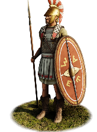
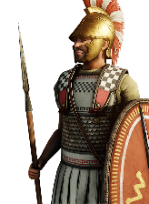

RTR: Imperium Surrectum
RTR: Imperium SurrectumMesembrian Hoplites


Class: spearmen · Category: infantry · Men per unit: 40
Description
As a Mesembrian might have remarked: “Look across the bay, brother. Beyond our narrow causeway, the Thracians enter our borders in ever-larger numbers, and the Celts of Tylis look upon our city with greedy eyes, ready to exact tribute. They believe we will cower behind our walls and accept their demands. Those fools. We are Dorians, not Ionians, and if war comes to our shores, every citizen will take up arms. The blood of those invaders will paint the waves red long before Mesembria falls!"
The polis of Mesembria relies on its Hoplites to defend its people and to project power along the West Pontic coast. These soldiers are armoured in scale-reinforced linen cuirasses (linothorakes) and wear Thracian or stylized pseudo-Corinthian helmets featuring false eyeholes emblazoned across the visor. For additional protection, they carry large oval thureos shields fitted with iron umbos, an adaptation inspired by contact with the Celts across the Thracian interior. Armed with heavy thrusting spears (dory), bundles of throwing javelins, as well as short xiphos swords (in RIS purely for decoration), these versatile medium infantrymen can form a solid line to repel charges, manoeuvre across the terrain to flank their enemies, or fight in naval operations.
Historical background
Situated on a narrow peninsula jutting into the Euxine Sea (modern Nesebăr, Bulgaria), Mesembria was founded, according to Herodotus, by a joint expedition of Byzantion and Kalchedon composed of refugees fleeing the Phoenician fleet during the Ionian Revolt in 493 BC (Hdt. 6.33; Danov, The Western Coast of the Black Sea in Antiquity (1947), p. 14). Following this expedition, the city rapidly developed into an economic hub, issuing its own silver coinage (obols, diobols, and drachmas) by the second quarter of the 5th century BC (Topalilov, ‘The Beginning of Messambria Pontica’, in: Studies in Ancient Art and Civilisation 25 (2021), p. 92). This coinage indicates the expansion of the city’s chora toward the mountains, where one would find valuable stone quarries and silver mines, as well as to the lands of the Thracian tribe of the Nypsaioi (Hdt. 4.93.1). In fact, Messambria’s economic growth would have been impossible without good relations with the neighbouring Thracian tribes to its north and south.
Furthermore, archaeological findings have revealed that the colonists' settlement in 493 BC made a great impact on the polis’ life, with the expansion of the Messambrian chora mostly northward towards the Thracian tribe of Nipsaei promoting mutually beneficial relationships. As a result, Messambria grew as an economic hub and its chora started to be urbanized with the establishment of katoikiai (military or agricultural settlements) by the Messambrians as well as native settlements by the local Thracians. Imported pottery and the early Messambrian coinage that can be found spread among the settlements in the chora are good evidence for this, and reveal the mechanism of the colonization process in the area at the time (Topalilov (2021), pp. 92 and 99). With an estimated population of 3,000 to 4,000 citizens, the polis could field around 700 to 800 hoplites and launch up to 50 warships (Avram, Hind, and Tsetskhladze, ‘A summary on the Archaic/Classical polis of Mesembria’, in: Hansen, Mogens, and Nielsen, An Inventory of Archaic and Classical Poleis (2004), p. 935).
Throughout the 3rd and 2nd centuries BC, Mesembria faced constant threats from its neighbouring coastal cities and migrating tribes. While it is uncertain whether the Celts imposed a tribute on the city, it maintained trade ties with the Celtic Kingdom of Tylis, even minting tetradrachm coin dies for the Celtic king Kavaros (Dimitrov, ‘Celts, Greeks, and Thracians in Thrace during the Third Century BC’, in: Vagalinski, In Search of Celtic Tylis in Thrace (2010), pp. 51-66). To better protect itself, Mesembria sought military support from the major Hellenistic powers. Around 260 BC, the Seleucid King Antiochus II dispatched a commander (strategos) on a defensive alliance (epimachia) to safeguard Mesembria and Apollonia against regional enemies (IGBulg I 388; Dimitrov (2010), p. 59). By the 2nd century BC, territorial competition over the coastal flatlands and the strategic fortress of Anchialos erupted into a war against the neighbouring polis of Apollonia Pontike. As recorded in an honorary decree found at Istros, Mesembrian forces occupied Anchialos and committed sacrilege against Apollo's shrine. Apollonia called upon its allies from Istros, whose admiral Hegesagoras defeated the Mesembrian fleet in a hard-fought naval engagement, razed Anchialos to the ground, and forced the Mesembrians back (IGBulg I 388 bis; Chamoux, Hellenistic Civilization (1981), p. 169).
Despite these clashes, Mesembria remained a key power on the West Pontic coast, later allying with Pharnaces I of Pontus in 179 BC (Polyb. 25.2.12), who appears to have been the first Pontic ruler to treat the Black Sea as a unified political space susceptible to hegemonic governance. The reign of Pharnaces I of Pontus (c. 196-170 BC) thus represents a transformative change in the political history of the ancient Black Sea world, and one of the most consequential sequences of strategic decision-making in the Hellenistic east. From the modest inheritance of two coastal cities and an inland capital, Pharnaces I constructed, in the course of roughly three decades, the first Pontic maritime state: a kingdom controlling 400 miles of the Euxine coastline, anchored by a naval arsenal at Sinope, possessing protection relationships with the main Greek cities of the northern shore, and motivated by a strategic ideology that defined the Black Sea as a coherent political domain amenable to Pontic hegemony (Kinacı, 2026. ‘Pharnaces I of Pontus and the Expansionist Policy on the Black Sea’, in: Journal of Ancient History and Archaeology 13-2 (2026), pp. 26-34).
During the Mithridatic Wars, the city concluded a formal treaty with the Roman general Lucullus in 72 BC, as Appian relates: “Marcus Lucullus [...] advanced against the Mysians and arrived at the river outlets where six Grecian cities lie adjacent to the Mysian [Moesian] territory, namely, Istrus, Dionysopolis, Odessus, Mesembria, Callatis, and Apollonia” (Appian, Ill. 5.30). The city was also part of the Pontic pentapolis, which existed and played an important role in the administrative structure of the Roman province of Moesia Inferior, and was probably created during the Late Hellenistic Age. The pentapolis comprised the five cities in the northern part of the Western Pontic coast, which included Apollonia, Callatis, Mesembria, Odessos, and Tomis, all on the Black Sea shore (Gočeva, ‘Organization of Religious Life in Odessos’, in: Kernos 9 (1996), pp. 121-27). Under Roman hegemony, the city went through a period of decline, eventually only recovering during the Middle Ages.
The panoply of the Mesembrian Hoplites is a very interesting mix of Greek, Thracian, and Celtic equipment. It draws heavily on local numismatic and archaeological evidence from the West Pontic coast, with the headgear consisting primarily of Thracian-style helmets, as depicted on local Hellenistic silver and bronze coinage issued by the city (e.g., SNGCop 658; Corpus Nummorum type 312). Several specific mints also show a unique hybridisation, with the traditional Thracian helmet adapted into a pseudo-Corinthian style where false eyeholes are embossed directly onto the front peak of the visor (Corpus Nummorum coin 15266). Their defensive coverage is centred on the large, oval thureos shield, modelled after Celtic patterns encountered during the 3rd-century BC Celtic movements through Thrace. Physical evidence for these shields in the regional hinterland is corroborated by the discovery of iron shield umbos, uncovered in regional burial sites, such as the Hellenistic and Celtic necropolis at Kalnovo (Anastassov (2011), pp. 231, 236, and 239).
Stats
| Rank in roster | Rank in roster | Rank in roster | Rank in roster | ||||||||
|---|---|---|---|---|---|---|---|---|---|---|---|
| Men per unit | 40 | ███······· 28% | Attack | 12 | █████····· 53% | Charge bonus | 17 | ███████··· 71% | Defence | 53 | ██████████ 99% |
| · armour | 10 | ██████···· 55% | · defence skill | 38 | ██████████ 99% | · shield | 5 | ██████···· 58% | Morale | 13 | ███████··· 71% |
| Discipline | normal | Training | highly_trained | Recruitment cost | 2,292 dn | ██████···· 60% | Upkeep per turn | 839 dn | ████████·· 80% | ||
| Turns to recruit | 4 |
Weapons
| Primary | Secondary | Primary | Secondary | Primary | Secondary | Primary | Secondary | ||||
|---|---|---|---|---|---|---|---|---|---|---|---|
| Attack | 12 | — | Charge bonus | 17 | — | Type | melee · blade | — | Damage | piercing | — |
| Attributes | light_spear · spear_bonus_8 | — | Min delay between blows | 25 | — |
Defence
| Primary | Secondary | Primary | Secondary | Primary | Secondary | Primary | Secondary | ||||
|---|---|---|---|---|---|---|---|---|---|---|---|
| Total | 53 | — | Armour | 10 | — | Defence skill | 38 | — | Shield | 5 | — |
| Material | leather | — |
Condition, terrain and upkeep
| Hit points | 1 · mount 5 | Ground: scrub / sand / forest / snow | -1 / -1 / -4 / -1 | Heat penalty | 1 | Charge distance | 30 |
| Fire delay | 0 | Food consumed (low / high) | 60 / 300 | Mass per man | 1.19 | Formation: close / loose | 1 x 1.2 / 2 x 2.4 · 5 ranks · square |
| Men per unit | 40 as the unit file states — the game multiplies this by your unit size |
In battle: Can hide in long grass · Can sap · Very good stamina
The full attribute list (5)
sea_faring, hide_forest, hide_long_grass, can_sap, very_hardy
Who can recruit it
A core roster unit for one faction, which can raise it anywhere it holds the right building:
Exactly what a settlement must have, route by route (2)
| Building | Also requires | Building | Also requires | ||||
|---|---|---|---|---|---|---|---|
| Direct Rule | Tier 3 Military Industrial Complex · Tier 2 Colony | Homeland | Tier 2 Military Industrial Complex |